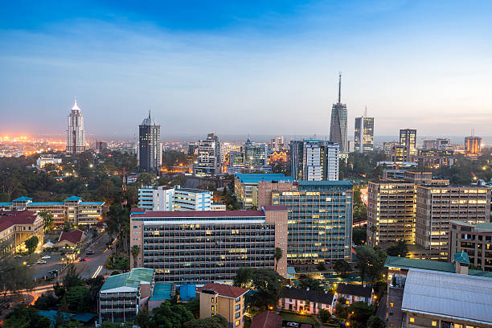

I have always been passionate about traveling and exploring new places, especially those with unique geographical features. For me, vacations are more than just relaxation—they're a chance to discover the beauty and complexity of the Earth.
Whether it's the towering mountains, pristine coastlines, or vast savannas, I find joy in immersing myself in different landscapes and learning how each environment shapes the culture and life around My love for geography makes every trip an adventure of discovery, blending education with the thrill of exploration.
These are some of my dream vacations:
Iceland's unique geography is a true playground for anyone with a love for natural phenomena. Its breathtaking landscapes are shaped by volcanic activity, with active volcanoes, geysers, and lava fields scattered across the country. The contrast of powerful glaciers sitting atop active volcanoes is a dramatic representation of how the Earth is constantly evolving. For me, this is a dream destination to witness the raw forces of nature in action—where fire and ice coexist in one mesmerizing environment.
The chance to stand before cascading waterfalls, walk through ancient lava caves, and soak in geothermal hot springs is the perfect way to indulge my love for geography and experience firsthand how the Earth continues to shape itself in such dynamic and beautiful ways.
Iceland's unique geography includes volcanoes, geysers, hot springs, and glaciers. Your love for geography makes this a dream destination to explore how the Earth shapes itself in such a dramatic and beautiful way.

The breathtaking Aurora Borealis is one of the natural phenomena I've always wanted to witness, a perfect blend of science and beauty. Adventurous opportunities such as hiking in volcanic landscapes to glacier tours and exploring lava caves. Iceland offers incredible adventures for an enthusiast like me.

Iceland’s rich Norse history, combined with its modern design and sustainable living practices, fascinates you as someone interested in how geography shapes culture.
From hiking in volcanic landscapes to glacier tours and exploring lava caves, Iceland offers incredible adventures for an enthusiast like you.
South Africa’s diverse wildlife, especially in Kruger National Park, provides a once-in-a-lifetime chance to see animals like lions, elephants, and rhinos up close. The country’s struggle against apartheid and its triumph is inspiring. Visiting places like Robben Island and Johannesburg's Apartheid Museum holds deep historical value.
South Africa is known for its rich mix of cultures and languages, and exploring its cities like Cape Town offers a vibrant blend of traditions, art, and cuisine.
From Table Mountain to the Garden Route, the landscapes in South Africa are as diverse as they are stunning.
South Africa is known for its rich mix of cultures and languages, and exploring its cities like Cape Town offers a vibrant blend of traditions, art, and cuisine.
South Africa is a diverse and captivating country known for its rich cultural history, stunning landscapes, and abundant wildlife, including the famous "Big Five." From the iconic Table Mountain in Cape Town to the vast Kruger National Park,
it offers a blend of modern cities and unforgettable nature experiences.
Kenya has a diversity of landscapes, from lush highlands to sun-kissed beaches, offers an incredible variety for any traveler seeking adventure and relaxation. The sense of home and familiarity makes the experience even more meaningful, allowing me to explore the beauty of my own country with a deeper appreciation. Kenya's vibrant communities, rich traditions, and hospitality create a unique atmosphere that feels both welcoming and exciting. It's a place where I can reconnect with my roots while discovering new and awe-inspiring sights.
Kenya is my homeland, and exploring its beauty reminds me of my roots. I find joy in rediscovering your culture and connecting deeper with local traditions.
Kenya offers everything from stunning coastal beaches like Diani and Lamu to mountainous regions like Mount Kenya, showcasing the country’s geographical diversity.
Kenya is famous for its safari destinations, particularly the Maasai Mara, where you can witness the Great Migration, an awe-inspiring spectacle of wildlife.

Kenya’s rich cultural heritage, with communities like the Maasai and Swahili, and traditions deeply embedded in everyday life, makes it a rewarding cultural journey for me.
Here are the list of my packing items:
In summary, my dream vacations are a reflection of my love for exploration, adventure, and cultural connection. Iceland's awe-inspiring geography, South Africa's vibrant wildlife and history, and Kenya's deep personal significance each offer a unique experience that fuels my passion for travel. These destinations allow me to immerse myself in the beauty and diversity of the world, creating memories that will last a lifetime. Together, they represent the perfect blend of natural wonder, cultural richness, and personal fulfillment, making them my ultimate dream vacations.